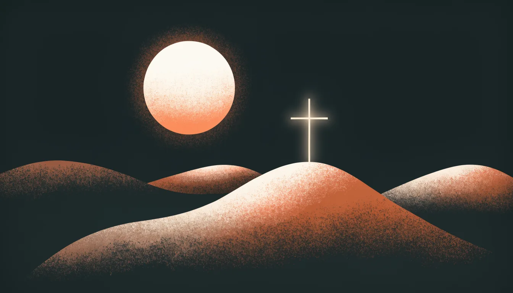

KRLE · Verdensreligionene
Kristendommen
Verdens største religion – troen på Jesus Kristus
Oppstart · Gjett først!
Av 100 mennesker i verden – hvor mange er kristne?
Det er rundt 2,3 milliarder mennesker. Ingen religion har flere tilhengere.
Dagens reise
Dette skal vi innom
1Hvem var Jesus?
2Hva tror kristne på?
3Fem kjennetegn: tekst, ritualer, høytider, symboler og steder
4Én religion, flere retninger
5Kristendommen i Norge og i verden
Del 1 · Hvem var Jesus?
Jesus fra Nasaret
- Levde for rundt 2000 år siden i området som i dag er Israel og Palestina. Han var jøde.
- Vandret rundt som lærer, fortalte lignelser og samlet tolv disipler.
- Ble korsfestet i Jerusalem. Kristne tror at han sto opp fra de døde den tredje dagen.
2000 år på ett minutt
Fra tolv disipler til 2,3 milliarder
Snakk sammen
Hvilke fortellinger om Jesus kjenner du fra før?
Tenk på jul, påske eller noe du har hørt eller lest. Finn to sammen med læringsvennen din.
Del 2 · Hva tror kristne på?
Én Gud – på tre måter
Trykk på en sirkel
Kristne tror på én Gud, som de møter på tre måter. Det kalles treenigheten.
Hva tror kristne på?
Fire ting som er kjernen i troen
Én Gud
Gud har skapt verden og bryr seg om menneskene.
Jesus er Guds sønn
Gud ble menneske i Jesus. Derfor kalles han Kristus.
Tilgivelse og frelse
Ingen er feilfrie, men alle kan bli tilgitt. Å bli reddet av Gud kalles frelse.
Nestekjærlighet
Troen skal vises i handling: å bry seg om andre, også dem man ikke kjenner.
Det viktigste budet, ifølge Jesus
«Du skal elske Gud av hele ditt hjerte – og din neste som deg selv.»
«Din neste» er menneskene rundt deg – også dem du ikke kjenner eller ikke liker.
Dette kalles det dobbelte kjærlighetsbudet.
Del 3
Fem kjennetegn
Kjennetegn 1 av 5 · Hellig tekst
Bibelen – et helt bibliotek
Det gamle testamentet
39 bøker. Skapelsen, Moses, kongene og profetene. Deles med jødedommen.
Det nye testamentet
27 bøker. Om Jesus og de første kristne.
De fire evangeliene
Matteus, Markus, Lukas og Johannes forteller om livet til Jesus.
Kjennetegn 2 av 5 · Ritualer
Fra livets start til slutt
Dåp
Trykk for å snuVann helles over hodet. Den som døpes, blir en del av kirken.
Nattverd
Trykk for å snuMenigheten deler brød og vin, slik Jesus gjorde med disiplene sin siste kveld.
Konfirmasjon
Trykk for å snuUngdom lærer mer om troen og bekrefter dåpen, ofte når de er 14–15 år.
Bønn
Trykk for å snuÅ snakke med Gud, alene eller sammen. Den mest kjente bønnen er Fadervår.
Kjennetegn 3 av 5 · Høytider
Kirkeåret følger fortellingen om Jesus
Velg en høytid
Trykk på knappene og se hvor på året høytiden ligger.
Kjennetegn 4 av 5 · Symboler
Hva betyr tegnene?
Det viktigste symbolet. Jesus døde på et kors, og kristne tror at han sto opp igjen.
Et hemmelig tegn for de første kristne da de ble forfulgt i Romerriket.
Står for Den hellige ånd og for fred.
Jesus kalles «verdens lys». Derfor tennes lys i kirken, i advent og ved dåp.
Kjennetegn 5 av 5 · Hellige steder
Fra kirken i bygda til Jerusalem
- Kirken: Guds hus og stedet der menigheten samles.
- Betlehem og Jerusalem: byene der Jesus ifølge Bibelen ble født, døde og sto opp.
- Nidarosdomen: Norges nasjonalhelligdom i Trondheim, bygd over graven til Olav den hellige.
- Roma og Vatikanet: sentrum for den katolske kirken, der paven bor.
Snakk sammen
Hvilke spor av kristendommen ser du der du bor?
Tenk på bygninger, navn, fridager, flagg og musikk. Finn tre eksempler sammen.
Del 4 · Én religion, flere retninger
Kirken deler seg
De ortodokse kirkene
Størst i Øst-Europa. Kjent for ikoner, hellige bilder.
Den katolske kirken
Størst i verden. Ledes av paven i Roma.
De protestantiske kirkene
Størst i Norge. Den norske kirke er luthersk.
Del 5 · Kristendommen i Norge og i verden
Tre tall å huske
0
milliarder
kristne i verden. Flest bor i Afrika, Europa og Latin-Amerika.
0
Stiklestad
Olav den hellige faller, og Norge blir etter hvert et kristent land.
0
i Norge
er medlem av Den norske kirke. Tallet synker litt hvert år.
Sjekk deg selv
Hva husker du?
Skriv ned i boka
Begreper å ta med
Kristus
Trykk for å snuTittel som betyr «den salvede», det samme som Messias.
Treenigheten
Trykk for å snuÉn Gud som Fader, Sønn og Den hellige ånd.
Evangelium
Trykk for å snu«Godt budskap». De fire fortellingene om Jesus.
Sakrament
Trykk for å snuHellig handling, som dåp og nattverd.
Frelse
Trykk for å snuÅ bli reddet og tilgitt av Gud.
Menighet
Trykk for å snuDe kristne som hører til i samme kirke.
Før du går
Ut-billett
1Én ting du lærte om kristendommen i dag.
2Én ting du lurer på eller vil vite mer om.